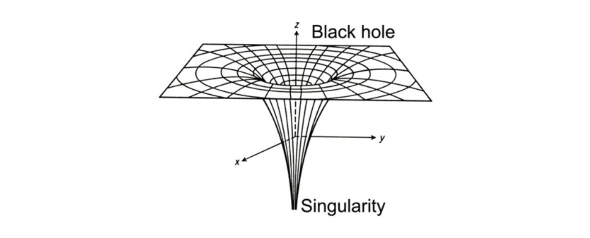
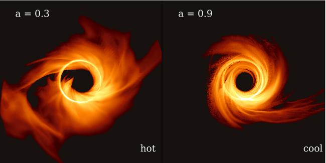

Black holes are born from the deaths of massive stars. These stars, with diameters 15 to over 100 times larger than the Sun (or 20–139 million km), collapse into black holes. Those massive stars have a fixed rate at which they rotate, and because of the conservation of angular momentum, if something spins and decreases in size, the rate at which it spins increases. A figure skater is a perfect example: when they have their arms out and spin on the ice, they rotate at a fixed speed, but once they pull their arms in (decreasing their diameter), they speed up.
Now apply that principle to a massive star with a diameter of 139 million km, shrinking down to the size of a singularity. What's the size of a singularity? According to general relativity, it's infinitely dense, meaning it has a fixed mass but zero volume. Yeah… that doesn't make sense. If a black hole is infinitely small, then it should spin infinitely fast, and it doesn't. So what gives?

The event horizon around a black hole is the boundary where, beyond it, nothing can escape. Its diameter depends on the spin and mass of the black hole, and the Kerr solution (a solution to Einstein's field equations that describes the spacetime geometry around a rotating black hole—I know… confusing, but stick with me) shows that black holes have a maximum allowed spin parameter of 1.
This means there is a limit to how fast a black hole can spin. That maximum exists because the greater the spin, the closer the event horizon gets to the singularity inside the black hole. If the spin parameter in the Kerr solution exceeds 1, the event horizon would vanish, revealing the dead star inside. We know, however, that this can't be true—the center of a black hole can never be seen. We've searched the universe for a naked singularity, but we haven't found one. This sets a cap on the maximum spin a black hole can reach, but those spins are still ridiculously fast, with some black holes spinning at about 90% the speed of light.

90% the speed of light is almost 700,000,000 mph. That is pushing it—literally. With the perplexity of black holes in mind, stay curious and nebular.